CSS
CSS
- language used to specify the presentation structural marked up documents
- developed by Hakon Wium Lie(CHSS) and Bert Bos (SSP)
Version History
- CSS Level 1 (Dec 1996)
- CSS Level 2 (May 1998)
- CSS Level 2 Revision (Jun 2011)
- CSS Level 3
HTML Stylesheets
-
3 sources of styles
- Author styles
- External (aka linked) Stylesheets
- Embedded (aka internal) Stylesheets
- Inline styles
- User Styles
- There are some browsers that provides alternatives throught extensions or plugins
- Example: Stylish
- User Agent Styles
CSS Statements
- At-Rules
- CSS Rule Sets (a.k.a CSS Rules, Style Rules)
CSS Selectors
Reference: https://www.w3.org/wiki/CSS/Selectors#Type_Selector
- Selectors
- Selector Syntax
- Simple Selectors
- Universal Selectors
- ID Selectors
- Class Selectors
- Attribute Selectors
- Type Selectors
- Combinators
- provide additional confition
- used to impose additional matching constrains following
- [space] descendant combinators
- Child combinators (>)
- Sibling combinator
- Adjacent Sibling Combinator (+)
- General Sibling combinator (~)
Pseudo Classes
- Structural pseudo-classes index.html
<table>
<tr>
<th colspan="5">Structural Pseudo Classes</th>
</tr>
<tr>
<td>webtech</td>
<td>webtech</td>
<td>webtech</td>
<td>webtech</td>
<td>webtech</td>
</tr>
<tr>
<td>webtech</td>
<td>webtech</td>
<td>webtech</td>
<td>webtech</td>
<td>webtech</td>
</tr>
<tr>
<td>webtech</td>
<td>webtech</td>
<td>webtech</td>
<td>webtech</td>
<td>webtech</td>
</tr>
<tr>
<td>webtech</td>
<td>webtech</td>
<td>webtech</td>
<td>webtech</td>
<td>webtech</td>
</tr>
<tr>
<td>webtech</td>
<td>webtech</td>
<td>webtech</td>
<td>webtech</td>
<td>webtech</td>
</tr>
</table>
- :nth-child() style.css
tr td:nth-child(2n){
background: yellow;
}
tr td:nth-child(odd){
background: blue;
}
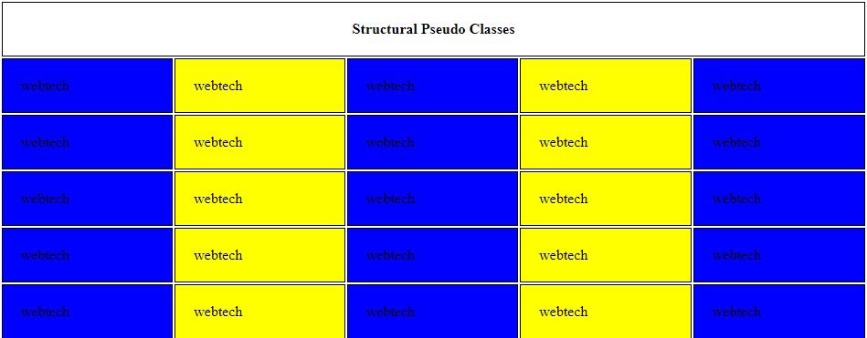
- :nth-last-child(odd) represents all odd number counting from the last one
- :nth-last-child(-n+2) represents the last two elements
tr td:nth-last-child(-n+2){
background: pink;
}
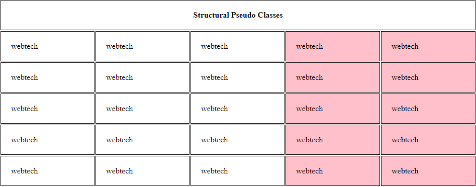
tr td:nth-of-type(3){
background: blue;
}
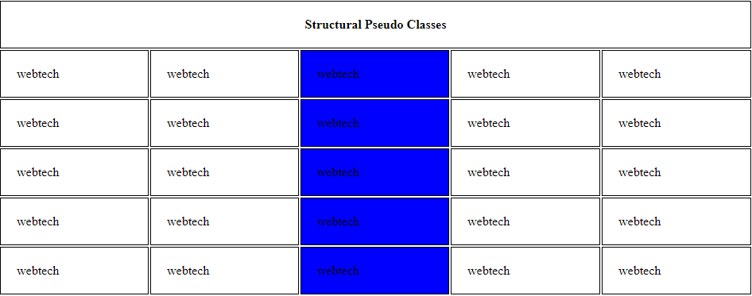
- Same as :nth-child(1)
- Same as :nth-last-child(1)
- Same as nth-of-type(1)
- Same as :nth-last-of-type(1)
- Same as :first-child,:last-child or :nth-child(1),:nth-last-child(1) but with lower specificity
<p>First paragraph inside the div</p>
<p><b>Second</b> paragraph</p>
<p><b>Bold para</b>graph paragraph</p>
style.css
b:only-child{
background:green;
}
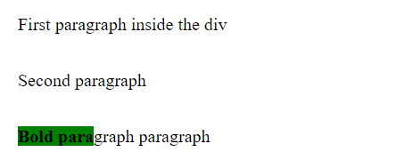
- Same as :first-of-type,:last-of-type or :nth-of-type(1),:nth-last-of-type(1) but with lower specificity
- :not index.html
<h1>Hello World</h1>
<p>This paragraph doesn't contain the hello id</p>
<p id = "Hello">This paragraph contains the hello id</p>
<p>This paragraph doesn't contain the hello id</p>
style.css
p:not(#Hello){
background:blue;
}
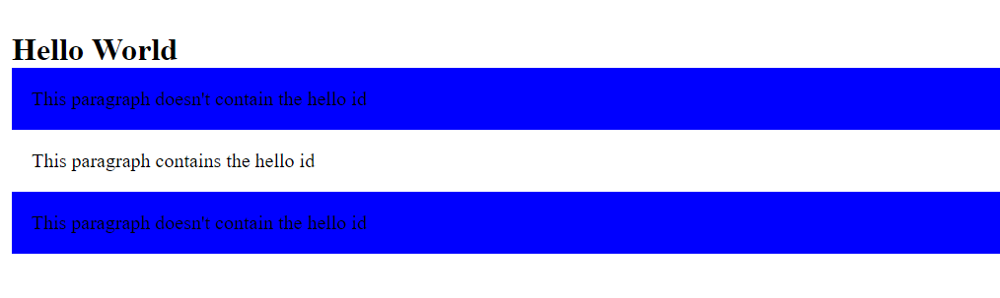
- Link Pseudo-Classes
-
index.html
<a> href = "https://i.slu.edu.ph/">SLU Portal</a>
- Works on links that are not yet visited
a:link{
color: violet;
}
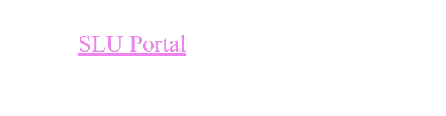
- Works on links that are already visited.
a:visited{
color: brown;
}
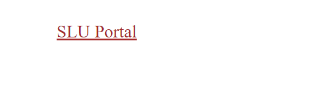
- :hover
- Works when the user's cursor is pointed to the element.
<a> href = "https://i.slu.edu.ph/">SLU Portal</a> <a> href = "https://www.google.com/">Google</a>
style.css
a:hover{
background: yellow;
}
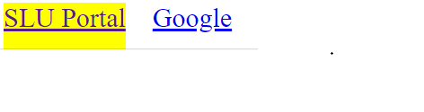
<a> href = "example.html">Example</a> <a> href = "https://www.google.com/">Google</a>
style.css
a:active{
background: pink;
}
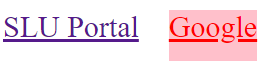
- This is usually use in forms
<form>
Name: <input type = "text"><br>
Course: <input type = "text">
</form>
Style.css
input:focus{
background:green;
}
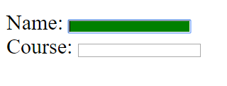
- :target
- :lang index.html
<p lang = "en">The language is english</p>
<p>Ito ay hindi english</p>
style.css
:lang(en){
background: black;
color: white;
}
- :enabled
- Mostly used in forms index.html
<form>
Name: <input type = "text"><br>
Course: <input type = "text" disabled = "disabled">
</form>
style.css
input:enabled{
background: gray;
}
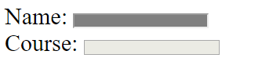
<form>
Name: <input type = "text"><br>
Course: <input type = "text" disabled = "disabled">
</form>
style.css
input:disabled{
background: black;
}
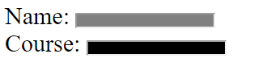
<form>
<input type = "checkbox" value = "a">
<label>Webtech</label>
<input type = "checkbox" value = "b">
<label>Practicum 1</label>
<input type = "checkbox" value = "c">
<label>Networks</label>
</form>
style.css
input:checked + label{
background: yellow;
}
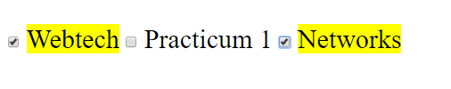
- :first - letter, ::first-letter
- :first-line, ::first-line
- :before, ::before
- :after, ::after
Selectors group
- Union of all elements and coma is used as a separator.
CSS Rules
- By origin and importance
- By Specify
- By Order
CSS declaration
- Properties
- Shorthand properties
- Allows authors to specify the values of several properties with a single property.
- Vendor specific extensions (a.k.a, vendor prefixes)
- Used by browser vendor as prefix for the names of experimental nonstandard CSS property. style.css
<p class = "first">The color is <b>black</b></p>
style.css
:root {
--color: black;
--color-blue: blue;
--fontsize: 35px;
}
b{
background-color: var(--color);
color: white;
}
.first{
font-size: var(--fontsize);
color: var(--color-blue);
}

- Value types
- Keywords
- Numbers
- Dimensions
- Length Units
- Font-relative
- Examples: em, ex, ch, rem
- Viewport-percentage
- Examples: vw, vh, vmin, vmax units
- Absolute Lengths
- Examples: cm, mm, q, in, pt, pc, px units
- Angle Units
- Usually used in transition and gradient.
- These are the deg, grad, rad and turn units
- Duration Units
- Usually used in animation and transitions.
- These are the s and ms units
- Frequency Units
- These are the Hz, kHz
- Resolution Units
- Usually used in media queries.
- These are the dpi, dpcm and dppx.
- Percentages
Value types are designed in several ways